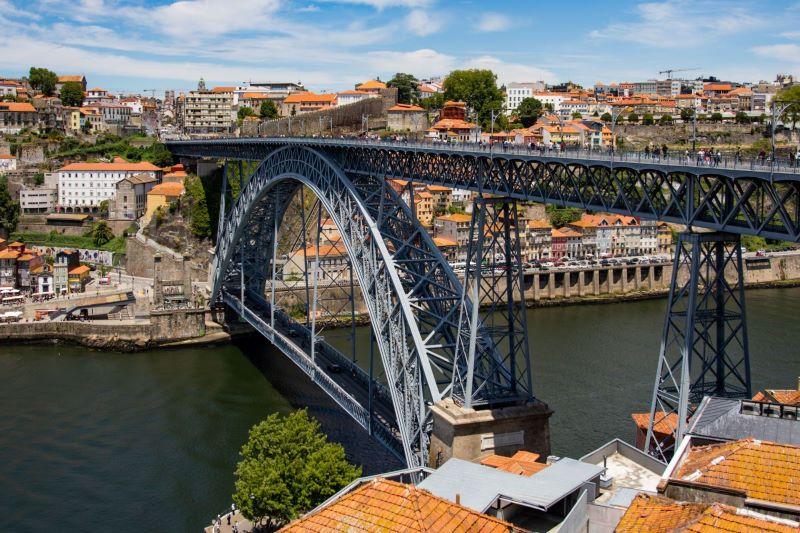
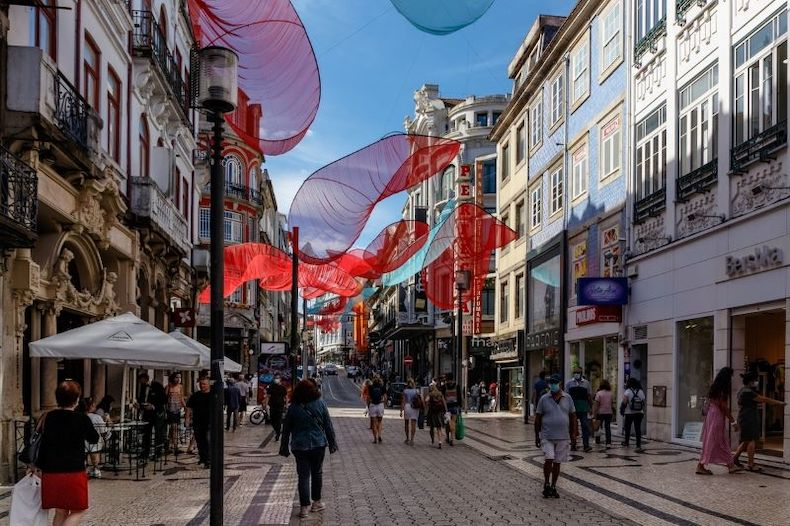

Esta é a Ponte Dom Luis II, ponte que liga as cidades do Porto e Vila Nova de Gaia separadas pelo rio Douro, em Portugal.
A rua Santa Catarina é a zona comercial mais importante do Porto. Essa rua de uso exclusivo para pedestres da parte alta da cidade. Concentra milhares de turistas por dia, de diferentes partes do mundo
